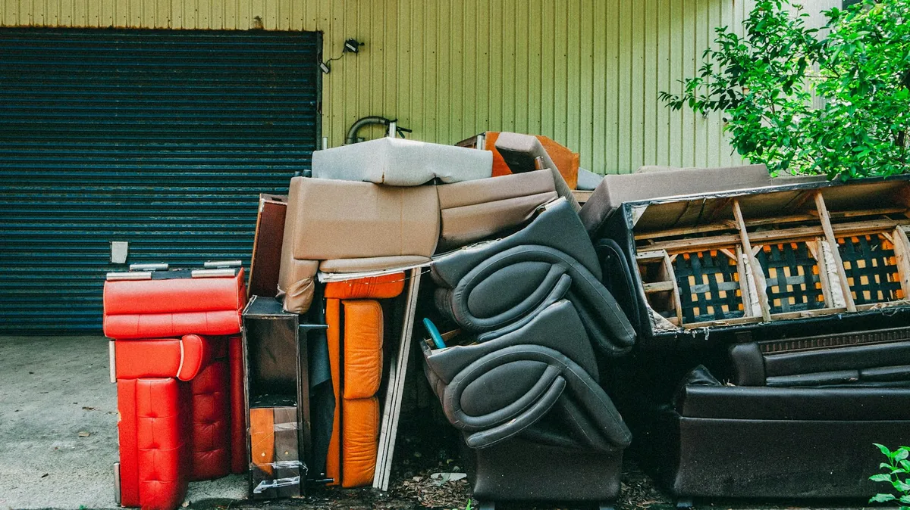

Furniture removal in Winnipeg
furniture
You point at it. We carry it out.
A sectional does not fit in a hatchback, and the friend who helped you move it in five years ago is not answering their phone. Couches, sofa beds, dressers, tables, desks, cabinets and carpet — we do the lifting and the stairs.

We work in finished basements, third-floor walk-ups and apartment buildings with one small elevator. Floor protection goes down and doorframes get padded before anything starts moving.
What we do
- Carried out from wherever it sits — no dragging it to the curb first
- Floor and doorframe protection on every interior carry
- Disassembly where a piece will not fit through the door intact
- Anything still usable offered to local charities before disposal
- Space swept when we leave
Everything we take in this category
- Couch
- The single most common thing we carry out. A three-seater usually clears a standard doorway on its end; if it will not, the legs and sometimes the back come off before we try. Frames with sound upholstery go to reuse first.Also: Sofa, Chesterfield, Loveseat, Settee, Davenport
- Sectional
- Nearly all of them come apart at the connectors, which is how they got into the room in the first place. Tell us if yours has a recliner or a sofa-bed module, because those put a lot of weight into one piece.Also: L-shaped couch, Modular sofa
- Sofa bed
- Roughly twice the weight of an ordinary couch because of the steel mechanism inside. We strap the mechanism shut before it moves so it cannot swing open on a staircase.Also: Pull-out couch, Hide-a-bed
- Futon
- Frame and mattress come apart and leave separately. Metal futon frames go to the scrap yard.Also: Futon frame
- Recliner
- Power recliners have a motor and wiring, so part of them goes through electronics recycling. Lift chairs are much heavier than they look; mention one when you book.Also: Lift chair, Power recliner, Armchair, Wingback chair
- Bed frame
- Taken apart if it is still assembled. Metal frames go to scrap and solid wood ones can often be reused. Mattresses are their own category, and we take both in the same trip.Also: Headboard, Footboard, Platform bed, Bunk bed, Daybed, Crib
- Dresser
- Empty the drawers first. A full dresser can weigh twice what an empty one does, and that weight is time on the stairs. Solid wood pieces in good shape are offered for reuse before anything else.Also: Chest of drawers, Nightstand, Armoire, Wardrobe, Bureau
- Dining table
- Legs come off wherever they can, which is usually the difference between getting a table out of a dining room and not. Chair sets in decent condition are some of the easiest things to rehome.Also: Kitchen table, Dining chairs, Chairs, Bar stools
- Bookcase
- Glass doors and shelves come out and travel separately. Particleboard units rarely survive being moved and go to disposal; solid wood gets offered for reuse.Also: Bookshelf, Shelving unit, Display cabinet, China cabinet, Hutch, Buffet
- Entertainment centre
- Old wall-unit entertainment centres are among the heaviest things in a typical living room, and they rarely fit back through the door they came in by. They come apart first.Also: Entertainment center, TV stand, Media console, Wall unit, Coffee table, End table, Side table
- Patio furniture
- Aluminium and steel frames go to scrap; resin and wicker go to disposal. An umbrella with a heavy weighted base counts as two things, not one.Also: Outdoor furniture, Patio set, Lawn chairs, Deck chairs, Patio umbrella, Outdoor bench
- Office desk
- Home-office desks and single workstations. For more than a room's worth of office furniture, commercial junk removal is set up for exactly that, with contractor accounts.Also: Desk, Computer desk, Office chair, Cubicle partition, Reception desk
- Carpet
- Rolled and taped before it moves. Wet carpet out of a flooded basement weighs several times what dry carpet does, so tell us if it is wet.Also: Rugs, Area rug, Underlay, Carpet padding, Broadloom
- Mirror
- Wrapped before it is carried so a crack cannot turn into a hazard halfway down the stairs.Also: Wall mirror, Glass tabletop
- Lamp
- Fixtures still wired into a ceiling need an electrician to take them down first. Once they are down, we take them.Also: Floor lamp, Light fixture, Chandelier
- Household garbage
- Bagged household garbage goes in the trailer like anything else. In most cleanouts it is the part people most want gone.Also: Garbage bags, Trash, Bagged junk, Clutter
- Clothing
- Clean, wearable clothing goes to donation rather than disposal. Curtains and blinds come down if they are still hanging.Also: Clothes, Shoes, Curtains, Blinds, Linens, Textiles
- Books
- Books in reasonable condition go to reuse. Personal documents are different: shred anything with names, addresses or account numbers first. We haul; we do not shred.Also: Magazines, Paper, Documents
- Moving boxes
- Break them down and bundle them if you have time, because flat cardboard takes a fraction of the trailer space and therefore the price. If you do not, we take them as they are.Also: Cardboard boxes, Packing material
- Toys
- Car seats have an expiry date and should never be reused, so they go to disposal, not donation. Everything else in good condition is offered for reuse first.Also: Kids' toys, Stuffed animals, Playpen, High chair, Stroller, Car seat
- Home decor
- The seasonal decorations of a few decades are a regular part of any basement or garage cleanout.Also: Decor, Picture frames, Artificial Christmas tree, Holiday decorations
Not on the list? Check everything we take, A to Z, or text us a photo and we will tell you straight.
What it costs
Priced by the space it takes in the trailer, from a single chair to a full apartment. Free on-site estimate, and the number is firm before anything moves.
Get a free quoteFurniture removal questions
No. We carry it out from wherever it sits — upstairs bedroom, finished basement, third-floor walk-up. You point at it, we do the lifting. That is the service.
It gets offered to local Winnipeg charities and reuse centres before anything else. A couch someone can still use is worth more donated than buried, and it keeps our landfill costs down, which is part of how the pricing works.
Usually yes. Most sectionals come apart, and where they do not we can often take the legs and back off. Tell us the access when you book and we will bring the right tools.
We put down floor protection and pad the doorframes on interior carries. If a piece genuinely will not fit without damage, we will stop and tell you before anything gets scratched.